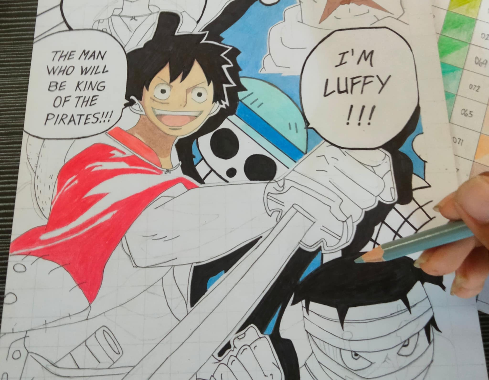
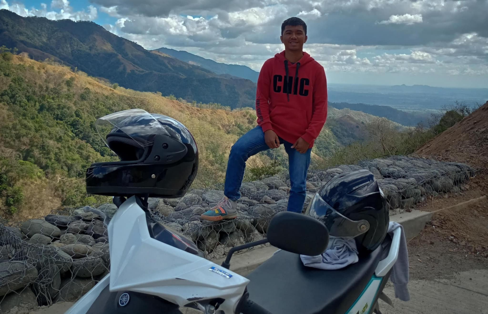
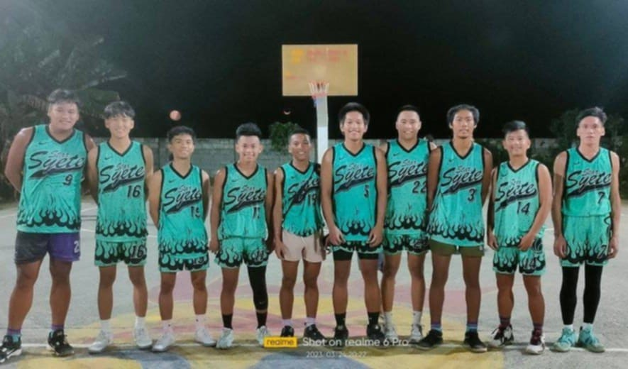

I really enjoy playing guitar, and music has always been something special to me. From a young age, I’ve loved the way music can bring out different emotions and make me feel better. Singing along to my favorite songs or just playing the guitar helps me feel peaceful and calm, especially when life gets stressful. Whenever I’m playing or singing, I can forget about everything else and just focus on the music. It’s a way for me to express my thoughts and feelings without using words. Music brings me comfort, and it’s a big part of who I am. It’s something I turn to whenever I need to relax or find a moment of joy. I'm not great of playing guitar but it give the enjoyment and satisfaction I want "

CREATING ARTS
I really enjoy drawing and creating different art styles. It’s something I’ve always loved to do, and it gives me a sense of happiness and satisfaction. I spend a lot of time experimenting with different techniques and improving my skills. Besides drawing for fun, I also take commissions to create portraits for people. This helps me earn some money, and it feels good to know that others appreciate my work. Art has become not just a hobby, but also a way for me to share my creativity with others and make a profit doing something I love. Being able to turn something I love doing into a source of income is amazing, and it motivates me to keep growing as an artist. Art has become more than just a hobby for me.

TRAVELS AND RIDES
I really enjoy traveling on my motorcycle. It’s a great way for me to see new places and experience the world. When I ride, I get to enjoy beautiful landscapes, like mountains, forests, and open fields, which always make me feel peaceful. Being in nature helps me relax and forget about life’s worries. Riding my motorcycle gives me a sense of freedom, and the calmness of nature helps clear my mind. Every time I travel, I feel happy and connected to the world around me. Whether I’m riding on quiet roads or seeing amazing views, it always brings me peace. I love stopping along the way to appreciate the views and enjoy the quiet moments. Traveling on my motorcycle always brings me a sense of happiness.

PLAYING BASKETBALL
I really enjoy playing basketball because it’s a lot of fun and keeps me active and energetic. It’s one of my favorite sports because it challenges me and helps me improve my skills. I love being on the court, whether I’m practicing shooting or playing a full game with friends. Basketball gives me a chance to test my abilities, learn new moves, and become a better player. I also love the teamwork involved, as everyone works together to achieve a common goal. The fast pace of the game keeps me excited and focused. It’s a great way to relax, stay fit, and have fun with friends or teammates. I always look forward to playing, as it’s a time for me to enjoy myself and push myself to be better.